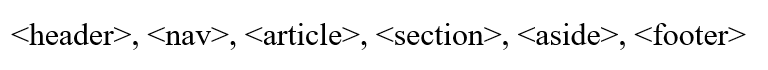
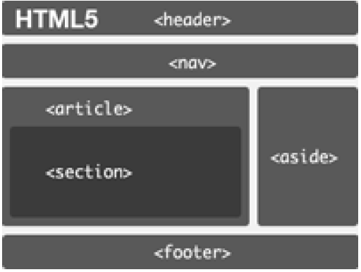
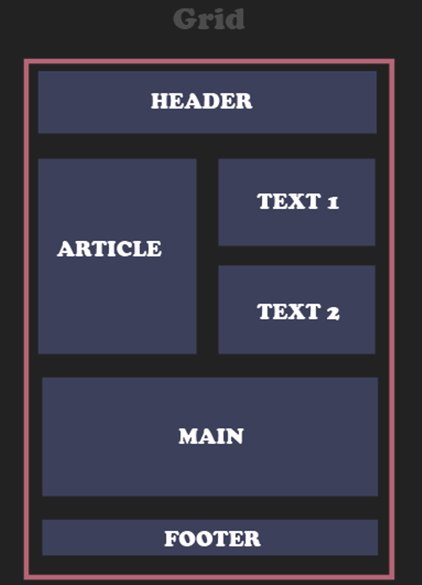

Aprendiendo diseño web: Etiquetas semánticas y CSS Grid
Próposito
Se pretende llevarle a cualquier persona los conocimientos básicos de del diseño web de una forma sencilla y fácil de entender, se explican los conceptos de Etiquetas semánticas y CSS Grid.
Etiquetas semánticas:
HTML5 incorpora nuevas etiquetas para estructurar páginas web. Estos elementos,
denominados generalmente elementos semánticos sirven para dividir un documento
en partes lógicas, indicando el tipo de contenido que se incluye en cada parte,
representan por tanto secciones lógicas o componentes de una aplicación web o un
documento:

Tomado de: Diez, T., Domínguez, M. J., Martínez, J. J., & Sáenz, J. (2012). Creación de páginas Web accesibles con HTML5. Consultado el, 26.

CSS Grid:
CSS Grid Layout es un sistema de rejilla bidimensional donde puedes
colocar los elementos del grid en celdas definidas por filas y columnas,
es decir, la idea principal de CSS Grid es dividir la pantalla en líneas
horizontales y verticales para crear las filas y columnas.
También, nos permite distribuir los elementos y cambiarlos de posición sin tener
que modificar el HTML, pues el módulo a través de sus propiedades se encarga
de colocarlo en la posición que deseamos.
Ventajas de usar CSS Grid Layout
Con CSS Grid Layout el proceso de colocar y distribuir los elementos en una página
es muy sencillo, pero también nos brinda otros beneficios, como lo son:
Aristimuño, J. (27 de 11 de 2020). Introducción a CSS Grid. Obtenido de Introducción a CSS Grid

REFERENCIAS
Diez, T., Domínguez, M. J., Martínez, J. J., & Sáenz, J. (2012). Creación de páginas Web accesibles con HTML5. Consultado el, 26.
http://www.esvial.org/wp-content/files/Atica2012_pp120-129.pdf
Aristimuño, J. (27 de 11 de 2020). Introducción a CSS Grid. Obtenido de Introducción a CSS Grid: https://styde.net/introduccion-a-css-grid/#:~:text=CSS%20Grid%20Layout%20es%20un%20sistema%20de%20rejilla%20bidimensional%20donde,crear%20las%20filas%20y%20columnas.